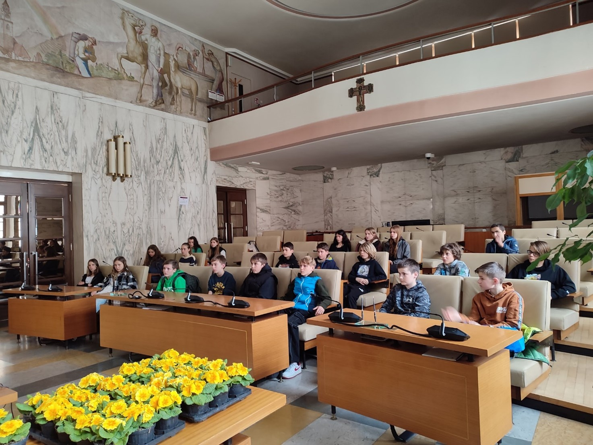

Über uns...
Unsere Schule am Sandplatz ist ein Jugendstil-Gebäude, welches zum Gebäudekomplex der "Englischen Fräulein" gehört. Sie verfügt über neun Klassenräume, Gruppenräume, ein Lehrer-/Sitzungszimmer und verschiedene Spezialräume. Die Turnhalle entspricht leider nicht den Standards einer Schulturnhalle und wird durch Außenbewegungsangebote kompensiert. Es gibt einen Medienraum, eine Küche als Mensaraum und einen großen Garten. Fahrradständer und drei Klassenzüge sind ebenfalls vorhanden, wobei der C-Zug Montessori-Klassen beinhaltet. Es gibt regen Zulauf, auch für Schüler mit Migrationshintergrund. Eine Sozialpädagogin ist täglich im Einsatz. Insgesamt besuchen 177 Schüler die Schule:
- 66 Schüler/innen die dritten Klassen (3 Klassen)
- Schüler/innen die zweiten Klassen (3 Klassen)
- 52 Schüler/innen die ersten Klassen (3 Klassen)
- An der Mittelschule „Peter Rosegger“ arbeiten 25 Lehrpersonen.
Auserdem nutzen wir das
digitale Register
.
Hier kann man sich an der Schule anmelden:
Schulanmeldung
.
Für weitere Links klicke auf die 3 Striche oben links.
Rosegger News
Alunni in Municipio a Merano - Classe: 2C
Gli studenti della classe 2C hanno partecipato a un progetto educativo che li ha portati a visitare
il
Municipio di
Merano. L’obiettivo è stato quello di avvicinare i ragazzi al Comune, che normalmente viene visto
come
un
luogo di
potere e di burocrazia. Per rinnovare il legame tra politica e cittadini, il progetto ha proposto di
valorizzare il
concetto di bene comune. Da qui il titolo, e l’idea del percorso che ha accompagnato gli alunni a
conoscere
la
casa comune come se fosse la propria abitazione, solo un po’ più grande.

Durante la visita, gli studenti
hanno
potuto scoprire come funziona il Municipio e quali sono i suoi servizi e le sue competenze. Hanno
incontrato
alcuni operatori comunali che hanno illustrato loro le attività di diversi uffici, come quelli
demografici e
tecnici. Qui hanno visto come si fanno i documenti personali e come si pianifica il territorio.
Molto
interessante
è stato vedere come dalla Home Page del Comune sia possibile consultare la cartografia, meglio di
quanto
si
possa
ottenere con Google Maps.
Unsinniger Donnerstag - MS Rosegger
Am Unsinnigen Donnerstag fand wieder der traditionelle Faschingsumzug der Mittelschule „Peter
Rosegger“
statt. Heute gab es zuerst in jeder Klasse Faschingsfeiern mit Faschingskrapfen und Spielen. Danach
folgte
der Umzug der maskierten SuS und ihrer „sportlichen“ Lehrpersonen mit Getöse, Kravall und lauter
Musik
durch
die ganze Stadt.
Wichtige Infos
Erziehungskonzept
Unser Erziehungskonzept legt besonderen Wert auf eigenverantwortliches Lernen und Arbeiten. Wir möchten Schüler/innen dazu erziehen, Verantwortung für ihr Lernen und ihr Handeln zu übernehmen und sich dabei selbstständig zu organisieren. Dabei unterstützen wir sie dabei, ihre individuellen Stärken und Schwächen zu erkennen und ihre Fähigkeiten weiterzuentwickeln. Ein weiterer Schwerpunkt liegt auf einem guten Lernklima. Wir verstehen unsere Schule als Haus des Lernens, in dem Schüler/innen in guten Klassengemeinschaften und Schulgemeinschaften zusammenarbeiten und voneinander lernen können. Wir legen Wert darauf, dass sich alle Schüler/innen im Schulalltag wohlfühlen und respektvoll miteinander umgehen. Um diese Ziele zu erreichen, setzen wir auf die Zusammenarbeit mit den Schüler/innen. Durch regelmäßige Klassenräte und andere Initiativen sollen sie aktiv an der Gestaltung des Schullebens teilhaben und ihre Verantwortung für die Gemeinschaft stärken. Wir möchten sie ermutigen, ihre Anliegen zu äußern und bei Entscheidungen, die sie betreffen, mitzubestimmen. Unser Erziehungskonzept ist somit ganzheitlich und zielt darauf ab, Schüler/innen zu selbstständigen und sozialkompetenten Persönlichkeiten zu erziehen.
Persönliche Sprechstunden der Lehrpersonen
| Lehrpersonen | Wochentag | Uhrzeit |
|---|---|---|
| Berteotti Verena | Mittwoch | 10:40-11:40 |
| Cocchieri Valentina | Mittwoch | 09:20-10:20 |
| Donà Miriam | Dienstag | 11:40-12:40 |
| Gamper Andrea | Mittwoch | 11:10-12:10 |
| Heiss Daniela | Dienstag | 10:40-11:10 |
| Kröss Georg | Mittwoch | 08:20-09:20 |
| Liguori Stefania | Mittwoch | 10:40-11:40 |
| Lochmann Martin | Mittwoch | 09:20-10:20 |
| Mair Erika | Dienstag | 09:50-10:20 |
| Menz Stefanie | Mittwoch | 10:20-10:50 |
| Mirandola Stefano | Mittwoch | 09:20-10:20 |
| Moroder Britta | Mittwoch | 08:30-09:00 |
| Niedermayr Jörg | Mittwoch | 07:50-09:20 |
| Osele Verena | Mittwoch | 10:40-11:40 |
| Pircher Dagmar | Dienstag | 10:40-11:40 |
| Rabensteiner Rita | Montag | 09:20-09:50 |
| Sanvido Elsa | Dienstag | 11:00-11:40 |
| Schenk Isabella | Mittwoch | 10:40-11:40 |
| Schlomm Michaela | Mittwoch | 10:40-11:40 |
| Schmidhammer Anita | Mittwoch | 09:20-10:20 |
| Simeaner Sabine | Mittwoch | 11:00-12:00 |
| Solderer Helene | Montag | 09:20-10:20 |
| Spath Robert | Mittwoch | 09:20-10:20 |
| Staffler Carmen | Donnerstag | 11:40-12:40 |
| Stona Marina | Mittwoch | 12:10-12:40 |
| Sulzer Ulrike | Mittwoch | 08:20-09:20 |
| Trebo Alexandra | Dienstag | 08:50-09:50 |
| Unterthurner Ursula | Mittwoch | 12:10-13:10 |
| Valtingojer Petra | Dienstag | 08:50-09:50 |
| Vikoler Monika | Mittwoch | 09:20-10:20 |
| Weisenhorn Monika | Dienstag | 11:40-12:40 |
| Winkler Sieglinde | Dienstag | 10:40-11:10 |
| Zindaco Laura | Dienstag | 10:40-11:40 |
| Zöggeler Elisabeth | Dienstag | 08:50-09:50 |

Das Wetter und mehr...
Wetter heute
Wetter morgen
Kontakte
Sandplatz 24, 39012 Meran BZ
Tel Rosegger: 0473/237527
ssp.meranuntermais@schule.suedtirol.it
ssp.meranuntermais@pec.prov.bz.it